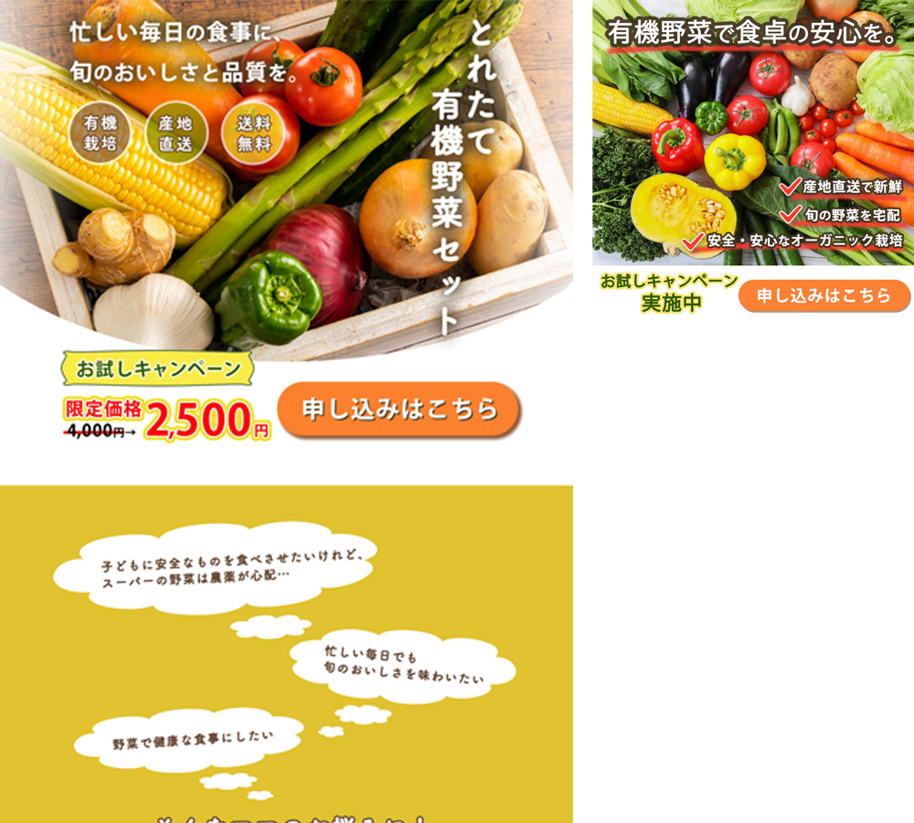

有機野菜セットの通販のお試しキャンペーン用販促バナー・LPです。
URL
https://cfrsw.github.io/toretateLP/toretate.html
制作ツール
Photoshop
制作時期
2023年9月
制作時間
3日
デザインについて
【目的】
産地直送の有機野菜配送サービスを拡大するため、商品「とれたて有機野菜セット」をお試し価格で購入できる期間限定キャンペーンのLPに誘導し、購買を促す。
【ターゲット】
共働き等で忙しい中でも、家族や子どもに健康で安全な食事をさせたいと考えている20代〜50代女性
商品が有機野菜なので、自然や畑の土が連想できるナチュラル感ややさしい雰囲気にまとめ、暖色カラーと緑のカラーを使いました。
構成は、ターゲットの導入〜商品購入に至るまでにあたり、下記の４つのプロセスを踏み、視線が迷わずに流れることを意識しました。
①ターゲットの感情に訴えかけ、悩みを引き出す
②商品に込めた思いや詳しい説明で興味を持ってもらう
③顧客の声やQ&Aを読み商品やキャンペーンに安心感・信頼感を感じてもらう
④購入ボタンをクリックする